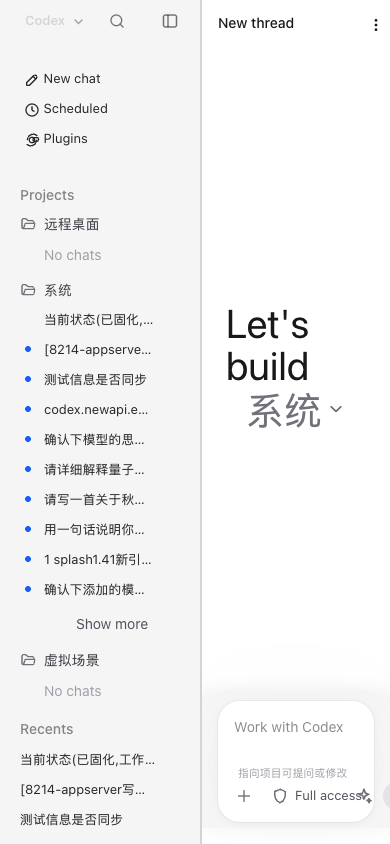

它是什么：Mobile Codex（代号 8214）是一个本地 Web 薄外壳，复用你桌面 ChatGPT.app 的 codex-cli 与
~/.codex 数据，让手机/浏览器与桌面端双向实时同步（逐 token 显示思考与输出，发送消息与桌面一致）。不是独立 App、不注入宿主、不改动宿主。
① 选择你的系统安装
点击下方系统徽标，显示对应的一键安装命令（命令按系统自动切换）：
② 安装前准备（所有系统通用）
- 安装桌面宿主 ChatGPT.app（必需）— 8214 复用它的 codex-cli 与数据。没有宿主，8214 无数据源。
- 安装 Node.js ≥ 18 — 8214 后端运行时。macOS 可用 Homebrew。
- 登录宿主一次 — 在桌面 ChatGPT.app 完成登录，8214 共享同一份凭据（不单独存密钥）。
③ 三步安装指引
- 克隆代码
git clone https://github.com/ricky8848/codex-web cd codex-web
- 安装依赖
npm install
- 启动 8214 后端 + 手机隧道
node src/server/main.js # 8214 监听 127.0.0.1:8214 # 手机访问需公网：起一条到 8214 的隧道（如 Cloudflare Tunnel） # 手机浏览器打开隧道地址即可
安装完成后，手机浏览器打开你的隧道地址 → 看到与桌面完全一致的 Codex 界面（对话/思考/命令审批/图片/文件）。
安装验证
curl http://127.0.0.1:8214/health✓ 返回 HTML 即后端正常
curl http://127.0.0.1:8216/health✓ Hub 同步中间层正常
④ 手机使用（图文指引）
- 手机浏览器打开隧道地址，看到 Codex 界面（与桌面一致）。

图1 · 手机浏览器打开后的主界面 - 发送消息，逐 token 看到思考过程与输出（和桌面逐字同步）。
 图2 · 逐字流式显示思考与回答
图2 · 逐字流式显示思考与回答 - 审批/图片/文件：宿主触发的命令审批会以卡片弹出；发送图片可回显。
 图3 · 命令审批卡片（点击后引导到桌面宿主完成，合规不代管）
图3 · 命令审批卡片（点击后引导到桌面宿主完成，合规不代管）
⑤ 系统要求与徽标说明
| 组件 | 系统 | 说明 |
|---|---|---|
| 8214 后端 | macOS / Linux | Node ≥18，回环 127.0.0.1:8214 |
| Hub 中间层 | macOS / Linux | 8216，文件底座增量监听 |
| 手机/浏览器 | Android / iOS / 桌面 | 纯 Web，经隧道访问，零安装 |
| 宿主 | macOS (ChatGPT.app) | 数据源，需已安装并登录 |
⑥ 常见问题
| 问题 | 解决 |
|---|---|
| 手机打不开 | 检查隧道是否运行；8214 只监听回环，必须经隧道 |
| 发送没反应 | 宿主忙碌时排队（合规单写路径）；看「已排队」状态条 |
| 刷新丢消息 | 心跳兜底会自动重建；稍等或重新进入对话 |
| 审批点不了 | 8214 不代管宿主 UI，审批请在桌面宿主完成 |
⑦ 合规与安全
· 零侵入：不注入、不控制、不重启宿主进程。
· 凭据：不读取/不外发
· 暴露面：默认仅 127.0.0.1 回环；公网隧道由你自行管理，对话内容注意脱敏。
· OpenAI / ChatGPT / Codex 为 OpenAI, Inc. 商标，本文名义引用，不主张所有权或背书。
· 凭据：不读取/不外发
~/.codex/auth.json，仅你粘贴落盘。· 暴露面：默认仅 127.0.0.1 回环；公网隧道由你自行管理，对话内容注意脱敏。
· OpenAI / ChatGPT / Codex 为 OpenAI, Inc. 商标，本文名义引用，不主张所有权或背书。
Mobile Codex v0.23.9g · 作者 ricky8848 (ORCID 0009-0002-6382-0711)
代码 github.com/ricky8848 · 2026
代码 github.com/ricky8848 · 2026